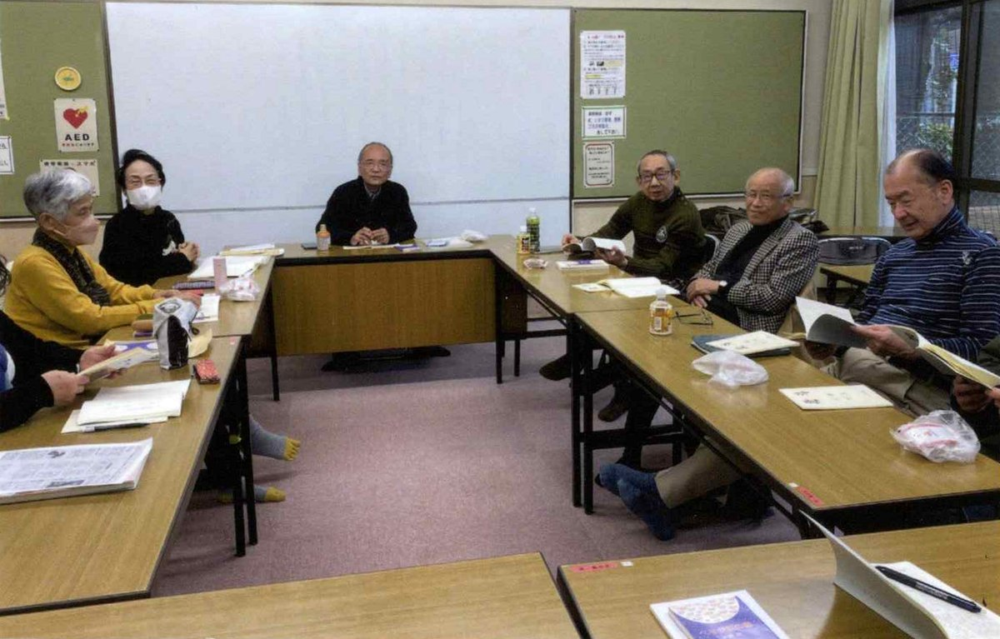
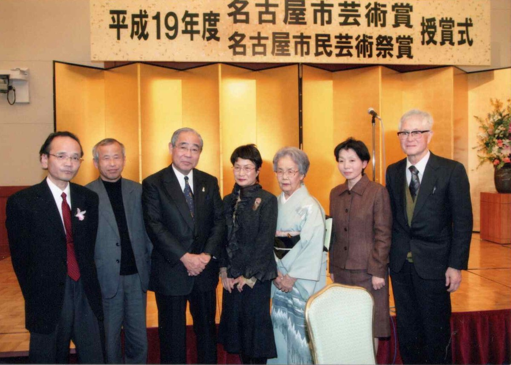

北斗 第728号（令和8年6月號）を発行いたしました。 今号は小説3篇のほか、詩・エッセイ・評論を掲載しております。

例会を開催しました。掲載作品についての合評をはじめ、同人・会員による活発な意見交換が行われました。

例会の様子
北斗の例会は、名古屋市中生涯学習センターにて開催しています。 ご関心のある方の見学も歓迎しております。日程は事務局までお問い合わせください。
700号刊行を記念して、「ウインクあいち」にて文化セミナーを開催しました。 日本近代文学研究家の尾形明子氏、現代女性文化研究所代表の岡田孝子氏、 そして竹中忍主宰による講演と鼎談を行いました。
北斗 700號記念 文化セミナー（写真をクリックすると拡大します）
セミナー後には、なだ万茶寮にて食事会を行いました。
創刊550号を記念し、あわせて名古屋市芸術奨励賞の受賞を祝して、 記念会・祝賀会を開催しました。多くの同人・会員、ご来賓の皆様にご参加いただきました。
北斗 創刊550号記念会（写真をクリックすると拡大します）
平成19年度 名古屋市芸術賞・名古屋市民芸術祭賞の授賞式に出席しました。 北斗は、同人誌として初めて名古屋市芸術奨励賞を受賞しています。

平成19年度 名古屋市芸術賞・名古屋市民芸術祭賞 授賞式